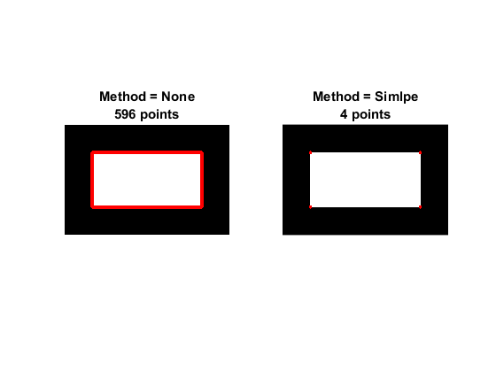
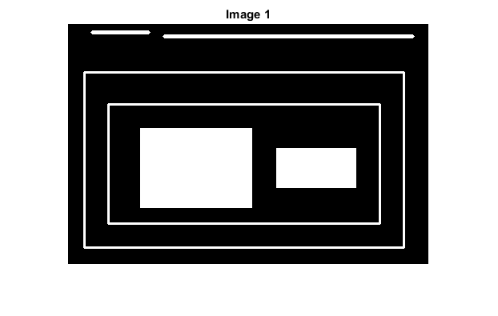
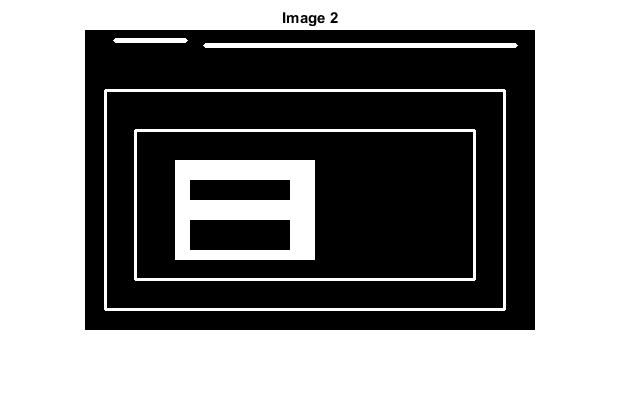

Contours in OpenCV
In the sample, we will:
- Understand what contours are.
- Learn about the hierarchy of contours, i.e. the parent-child relationship in contours.
- Learn to find and draw contours using the functions cv.findContours and cv.drawContours.
Sources:
Contents
Contours
Contours can be explained simply as a curve joining all the continuous points (along the boundary), having same color or intensity. The contours are a useful tool for shape analysis and object detection and recognition.
- For better accuracy, use binary images. So before finding contours, apply threshold or canny edge detection.
- In OpenCV, finding contours is like finding white object from black background. So remember, object to be found should be white and background should be black.
There are three arguments in cv.findContours function, first one is source image, second is contour retrieval mode, third is contour approximation method. And it outputs the contours and hierarchy. The output contours are a cell array of all the contours in the image. Each individual contour is a cell array of (x,y) coordinates of boundary points of the object.
Drawing Contours
To draw the contours, cv.drawContours function is used. It can also be used to draw any shape provided you have its boundary points. Its first argument is source image, second argument is the contours which should be passed as a cell array, third argument is index of contours (useful when drawing individual contour, or -1 to draw all contours). Remaining arguments are color, thickness, etc.
Let's see how to find and draw contours of a binary image:
img = imread('image.jpg') gray = cv.cvtColor(img, 'RGB2GRAY'); bw = cv.threshold(gray, 'Otsu'); [contours,hierarchy] = cv.findContours(bw, 'Mode','Tree', 'Method','Simple'); img = cv.drawContours(img, contours, 'Hierarchy',hierarchy, 'Color',[0 255 0]);
Contour Approximation Method
This is the third argument in cv.findContours function. What does it denote actually?
We previously explained that contours are the boundaries of a shape with the same intensity. It stores the (x,y) coordinates of the boundary of a shape. But does it store all the coordinates? That is specified by this contour approximation method.
If you set Method = None, all the boundary points are stored. But actually do we need all the points? For example, you found the contour of a straight line. Do you need all the points on the line to represent that line? No, we need just two end points of that line. This is what Method = Simple does. It removes all redundant points and compresses the contour, thereby saving memory.
Below image of a rectangle demonstrate this technique. Just draw a circle on all the coordinates in the contour array (drawn in blue color). First image shows points what you got with None (734 points) and second image shows the one with Simple (only 4 points). See how much memory it saves!

% image with a simple rectangular shape img = zeros(200, 300, 'uint8'); img = cv.rectangle(img, [50 50 200 100], 'Color',255, 'Thickness','Filled'); % find contour w/o approximation contours = cv.findContours(img, 'Method','None'); cntr1 = cat(1, contours{1}{:}); % find contour w/ approximation contours = cv.findContours(img, 'Method','Simple'); cntr2 = cat(1, contours{1}{:}); % draw both contours points out = repmat(img, 1, 1, 3); out1 = cv.circle(out, cntr1, 3, 'Color',[255 0 0], 'Thickness','Filled'); out2 = cv.circle(out, cntr2, 3, 'Color',[255 0 0], 'Thickness','Filled'); % compare results subplot(121), imshow(out1) title({'Method = None', sprintf('%d points', size(cntr1,1))}) subplot(122), imshow(out2) title({'Method = Simlpe', sprintf('%d points', size(cntr2,1))})
Contours Hierarchy
Normally we use the cv.findContours function to detect objects in an image, right? Sometimes objects are in different locations. But in some cases, some shapes are inside other shapes. Just like nested figures. In this case, we call outer one as parent and inner one as child. This way, contours in an image has some relationship to each other. And we can specify how one contour is connected to each other, like, is it child of some other contour, or is it a parent etc. Representation of this relationship is called the Hierarchy.
Consider an example image below :

In this image, there are a few shapes numbered from 0-5. 2 and 2a denote the external and internal contours of the outermost box.
Here, contours 0,1,2 are external or outermost. We can say, they are in hierarchy-0 or simply they are in same hierarchy level.
Next comes contour-2a. It can be considered as a child of contour-2 (or in opposite way, contour-2 is parent of contour-2a). So let it be in hierarchy-1. Similarly contour-3 is child of contour-2 and it comes in next hierarchy. Finally contours 4,5 are the children of contour-3a, and they come in the last hierarchy level. From the way the boxes are numbered, we would say contour-4 is the first child of contour-3a (It can be contour-5 also).
We mentioned these things to understand terms like same hierarchy level, external contour, child contour, parent contour, first child, etc. Now let's get into OpenCV.
So each contour has its own information regarding what hierarchy it is, who is its child, who is its parent, etc. OpenCV represents it as an array of four values: [Next, Previous, First_Child, Parent].
- Next denotes next contour at the same hierarchical level
For example, take contour-0 in our picture. Who is next contour in its same level? It is contour-1. So simply put Next = 1. Similarly for contour-1, next is contour-2. So Next = 2.
What about contour-2? There is no next contour in the same level. So simply, put Next = -1. What about contour-4? It is in same level with contour-5. So its next contour is contour-5, so Next = 5.
- Previous denotes previous contour at the same hierarchical level
It is same as above. Previous contour of contour-1 is contour-0 in the same level. Similarly for contour-2, it is contour-1. And for contour-0, there is no previous, so put it as -1.
- First_Child denotes its first child contour
There is no need of any explanation. For contour-2, child is contour-2a. So it gets the corresponding index value of contour-2a. What about contour-3a? It has two children. But we take only first child. And it is contour-4. So First_Child = 4 for contour-3a.
- Parent denotes index of its parent contour
It is just opposite of First_Child. Both for contour-4 and contour-5, parent contour is contour-3a. For contour-3a, it is contour-3 and so on.
Note: If there is no child or parent, that field is taken as -1.
Contour Retrieval Mode
So now we know about the hierarchy style used in OpenCV, we can check into Contour Retrieval Modes in OpenCV with the help of same image given above.
img1 = zeros(300, 450, 'uint8'); img1 = cv.line(img1, [30 10], [100 10], 'Color',255, 'Thickness',4); img1 = cv.line(img1, [120 15], [430 15], 'Color',255, 'Thickness',4); img1 = cv.rectangle(img1, [20 60 400 220], 'Color',255, 'Thickness',2); img1 = cv.rectangle(img1, [50 100 340 150], 'Color',255, 'Thickness',2); img1 = cv.rectangle(img1, [90 130 140 100], 'Color',255, 'Thickness','Filled'); img1 = cv.rectangle(img1, [260 155 100 50], 'Color',255, 'Thickness','Filled'); figure, imshow(img1), title('Image 1')
img2 = zeros(300, 450, 'uint8'); img2 = cv.line(img2, [30 10], [100 10], 'Color',255, 'Thickness',4); img2 = cv.line(img2, [120 15], [430 15], 'Color',255, 'Thickness',4); img2 = cv.rectangle(img2, [20 60 400 220], 'Color',255, 'Thickness',2); img2 = cv.rectangle(img2, [50 100 340 150], 'Color',255, 'Thickness',2); img2 = cv.rectangle(img2, [90 130 140 100], 'Color',255, 'Thickness','Filled'); img2 = cv.rectangle(img2, [105 150 100 20], 'Color',0, 'Thickness','Filled'); img2 = cv.rectangle(img2, [105 190 100 30], 'Color',0, 'Thickness','Filled'); figure, imshow(img2), title('Image 2')
1. Mode = List
This is the simplest of the four flags (from explanation point of view). It simply retrieves all the contours, but doesn't create any parent-child relationship. Parents and kids are equal under this rule, and they are just contours, i.e they all belongs to same hierarchy level.
So here, 3rd and 4th term in hierarchy array is always -1. But obviously, Next and Previous terms will have their corresponding values. Just check it yourself and verify it.
Below is the result we get, and each row is hierarchy details of corresponding contour. For example, first row corresponds to contour 0. Next contour is contour 1. So Next = 1. There is no previous contour, so Previous = -1. And the remaining two, as told before, it is -1.
[~,hierarchy] = cv.findContours(img1, 'Mode','List'); hierarchy = cat(1, hierarchy{:}); display(hierarchy)
hierarchy =
1 -1 -1 -1
2 0 -1 -1
3 1 -1 -1
4 2 -1 -1
5 3 -1 -1
6 4 -1 -1
7 5 -1 -1
-1 6 -1 -1
This is the good choice to use in your code, if you are not using any hierarchy features.
2. Mode = External
If you use this flag, it returns only extreme outer flags. All child contours are left behind. We can say, under this law, only the eldest in every family is taken care of. It doesn't care about other members of the family.
So, in our image, how many extreme outer contours are there? i.e at hierarchy-0 level?. Only 3, i.e contours 0,1,2, right? Now try to find the contours using this flag. Here also, values given to each element is same as above. Compare it with above result. Below is what we get:
[~,hierarchy] = cv.findContours(img1, 'Mode','External'); hierarchy = cat(1, hierarchy{:}); display(hierarchy)
hierarchy =
1 -1 -1 -1
2 0 -1 -1
-1 1 -1 -1
You can use this flag if you want to extract only the outer contours. It might be useful in some cases.
3. Mode = CComp
This flag retrieves all the contours and arranges them to a 2-level hierarchy, i.e external contours of the object (its boundary) are placed in hierarchy-1. And the contours of holes inside object (if any) is placed in hierarchy-2. If any object inside it, its contour is placed again in hierarchy-1 only. And its hole in hierarchy-2 and so on.
Just consider the image of a "big white zero" on a black background. Outer circle of zero belongs to first hierarchy, and inner circle of zero belongs to second hierarchy.
We can explain it with a simple image. Here the order of contours are labelled in red color and the hierarchy they belongs to, in green color (either 1 or 2). The order is same as the order OpenCV detects contours.

So consider first contour, i.e contour-0. It is hierarchy-1. It has two holes, contours 1,2, and they belong to hierarchy-2. So for contour-0, Next contour in same hierarchy level is contour-3. And there is no previous one. And its first is child is contour-1 in hierarchy-2. It has no parent, because it is in hierarchy-1. So its hierarchy array is [3,-1,1,-1].
Now take contour-1. It is in hierarchy-2. Next one in same hierarchy (under the parenthood of contour-1) is contour-2. No previous one. No child, but parent is contour-0. So array is [2,-1,-1,0].
Similarly contour-2. It is in hierarchy-2. There is not next contour in same hierarchy under contour-0. So no Next. Previous is contour-1. No child, parent is contour-0. So array is [-1,1,-1,0].
contour-3: Next in hierarchy-1 is contour-5. Previous is contour-0. Child is contour-4 and no parent. So array is [5,0,4,-1].
contour-4: It is in hierarchy-2 under contour-3 and it has no sibling. So no next, no previous, no child, parent is contour-3. So array is [-1,-1,-1,3].
Remaining you can fill up. This is the final answer we get:
[~,hierarchy] = cv.findContours(img2, 'Mode','CComp'); hierarchy = cat(1, hierarchy{:}); display(hierarchy)
hierarchy =
3 -1 1 -1
2 -1 -1 0
-1 1 -1 0
5 0 4 -1
-1 -1 -1 3
7 3 6 -1
-1 -1 -1 5
8 5 -1 -1
-1 7 -1 -1
4. Mode = Tree
It retrieves all the contours and creates a full family hierarchy list. It even tells, who is the grandpa, father, son, grandson and even beyond...
For examle, take the above image, run it with Mode = Tree, reorder the contours as per the result given by OpenCV and analyze it. Again, red letters give the contour number and green letters give the hierarchy order.

Take contour-0: It is in hierarchy-0. Next contour in same hierarchy is contour-7. No previous contours. Child is contour-1. And no parent. So array is [7,-1,1,-1].
Take contour-1: It is in hierarchy-1. No contour in same level. No previous one. Child is contour-2. Parent is contour-0. So array is [-1,-1,2,0].
The remaining is similar. Below is the full answer:
[~,hierarchy] = cv.findContours(img2, 'Mode','Tree'); hierarchy = cat(1, hierarchy{:}); display(hierarchy)
hierarchy =
7 -1 1 -1
-1 -1 2 0
-1 -1 3 1
-1 -1 4 2
-1 -1 5 3
6 -1 -1 4
-1 5 -1 4
8 0 -1 -1
-1 7 -1 -1